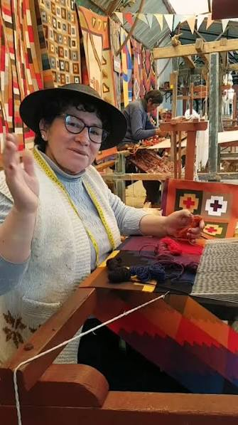

NUESTRA HISTORIA

El Taller Buendía nació en el año 2010 en el distrito de Hualhuas, Huancayo. Comenzó como un pequeño negocio familiar con la misión de tejer mantas, ponchos y chalinas hechas a mano.
Con el paso de los años, el taller aprendió a combinar técnicas ancestrales de telar con nuevos diseños para vender sus productos en ferias locales y llegar a más familias de Junín.
NUESTROS VALORES
- Trabajo hecho a mano y con dedicación.
- Uso de lanas naturales de alpaca y oveja.
- Respeto a la cultura de Hualhuas.